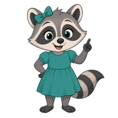

Wer
flattert da?

Was flattert da?
A
Vogel
B
Falter
C
Fledermaus
Alle aufstehen!
Spreizt eure Finger!
Lotta fliegt mit ihren Händen!
Spiel: Fledermaus und Falter
Fledermaus?
Falter!
Wie groß ist Lotta?
A
Fußball
B
Banane
C
Streichholz-
schachtel
So klein!
Wie findet Lotta im Dunkeln ihr Futter?
Werdet ihr Lottas Forscherteam?
Bald könnt ihr erklären, wie Fledermäuse im Dunkeln jagen.
1
Kapitel 1
Lotta hat Hunger
2
Kapitel 2
Lotta ist weg!
z
z
Z